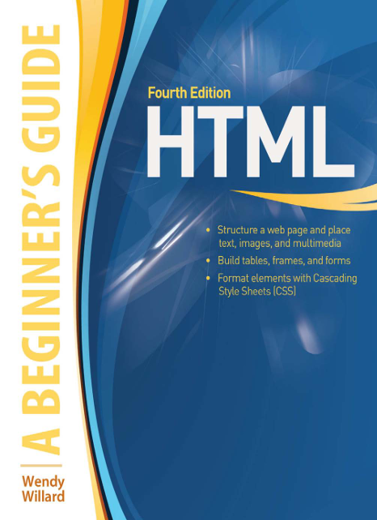

Internet and Web designing
About this Subject
Internet
The internet is a global network of interconnected computers that allows users to share information and
communicate. It operates through protocols like TCP/IP and enables access to websites, emails, social media,
online services, and more. The World Wide Web (WWW) is a major part of the internet, consisting of web pages
linked through hyperlinks and accessible via browsers.
Web Designing
Web designing is the process of creating and structuring websites to ensure an engaging and user-friendly
experience. It involves both aesthetics (layout, colors, typography) and functionality (navigation,
responsiveness). Web designers use HTML, CSS, and JavaScript to build websites, along with tools like Adobe XD,
Figma, and WordPress. A well-designed website should be visually appealing, easy to navigate, and optimized for
different devices.
Syllabus
Total Hrs.: 42
Unit-1 [No. of Hrs.: 8]
Fundamentals of the Internet: Overview of Internet architecture and the World Wide Web , HTTP/HTTPS protocols:
Request-response cycle, status codes, headers Role of DNS: Domain name resolution and structure . Differences
between
static and dynamic websites
Unit-2 [No. of Hrs.: 8]
HTML and CSS for Web Development: Introduction to HTML: Structure, tags, attributes, and semantic elements. Building
static web pages: Forms, tables, and navigation menus. Introduction to CSS: Selectors, properties, and box model.
CSS Flexbox and Grid: Layout design and implementation. Designing a responsive webpage using media queries
Unit-3 [No. of Hrs.: 9]
JavaScript for Interactivity: Basics of JavaScript: Syntax, variables, and operators. Functions and event handling.
Form validation: Checking user inputs and error handling. DOM manipulation: Dynamic updates to HTML elements.
Implementing toggle features, such as dark/light mode.
Unit-4 [No. of Hrs.: 9]
Web Forms and Multimedia Integration: Creating and designing web forms: Input types, validation techniques.
Embedding multimedia: Audio, video, and external content (e.g., YouTube videos). Introduction to client-side
validation using JavaScript. Capturing user feedback through interactive forms
Unit-5 [No. of Hrs.: 8]
Advanced Topics in Web Design: Responsive web design: Principles and implementation using CSS. Web performance
optimization: Image compression, lazy loading, and code minification. Accessibility in web design: Guidelines and
best practices. Introduction to web design tools and frameworks (e.g., Bootstrap basics)
Text Book
[T1] Ramesh Bangia, "Multimedia and Web Technologies" , Firewall Media.
Reference Book
[R1] Wendy Williard, "HTML Beginners Guide" ,Tata McGraw-Hill.
